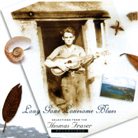
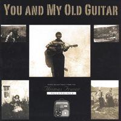
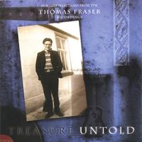

Long Gone Lonesome Blues, You and My Old Guitar, Treasure Untold
DA DA1, DA DA2, DA DA3
DA DA1: Brakeman's Blues, The Mississippi Shore, Lonely Boy on the Prairie, When did you Leave Heaven?, Long Gone Lonesome Blues, Down the Trail of Aching Hearts, Loose Talk, Star Spangled Waltz, Rye Whisky, To the East, to the West, Don't be a Baby, Peach Pickin Time in Georgia, TB Blues, I Saw your Face in the Moon, Traditional Reel, Lullaby Yodel, My Little Old Home Down in New Orleans, The Garden of Roses, Everyone is Saying Hello Again, Whippin' that Ole TB, Waltz of the Wind, Palamino Pal of Mine, Hobo Bill's Last Ride, Over the Rainbow.Almost 30 years after he died, based on a box of old reel-to-reel recordings stashed away in the 1950s and ‘60s, Shetlander Thomas Fraser has garnered a degree of attention that few singers of old country music could expect during the most conventionally successful lifetime. A sticker on the first of his CDs quotes the magazine Country Music Roundup as describing the music contained therein as ‘The most important work in the history of British country music’, while on a website devoted to Fraser’s music, among dozens of enthusiastic endorsements from all sorts of sources, a country music DJ from Texas is quoted as saying that these are ‘some of the greatest recordings of American music that you will hear’. Even the mainstream press has had to dig deep into its store of superlatives - the Observer devoted a lengthy illustrated feature to Fraser and his music. Without hearing the recordings, you might feel inclined to assume that this is all so much hyperbole, fuelled by the romantic tale of the long-lost tapes and the family’s determination to get them heard - how could an obscure fisherman and crofter from the remote Burra Isle, who died so long ago, completely unknown outside of his local community, suddenly attract such overwhelming praise? Then you hear the music, and it doesn’t seem surprising any more.DA DA2: Blue Yodel No1, You & My Old Guitar, Carolina Moon, Cowhand's Last Ride, The Letter Edged in Black, Cowboy Johnny's Last Ride, Lonesome Town, Act 1 Act 2 Act 3, Away out on the Mountain, Pottinger's Reel, I'm Glad I came to see you Once Again, Unwanted Sign Upon My Heart, Yodelling Cowboy, Blue Yodel No2, Louisiana, Abilene, Careless Hands, Blue Yodel No5, The Homesteader's Reel, A Talk with My Heart, Muleskinner Blues, Little Old Wine Drinker Me, Sadie My Little Girl, 'Tis Sweet to be Remembered, Lovesick Blues.
DA DA3: Mississippi River Blues, My Philipino Rose, Beyond the Reef, Maybe, Wedding Bells, Irish Hornpipe (Traditional Reels), Lamp Lighting Time in the Valley, Treasures Untold, Blue Yodel No 4 (California Blues), When the Cactus is in Bloom, My Carolina Sunshine Girl, Rambling Cowboy, The Mason's Apron (Traditional Reel) Waiting for a Train, Whistle Blow (I Heard That), We'll Never Say Goodbye, Why Should I be so Lonely?, Lonesome Road Blues, Old Pal of my Heart, Farewell to Loch Katrine (Tradtional Reel), The Mississippi Moon, Melancholy Blues, Blue Canadian Rockies, Winter Winds Blowing, Bluebird Island.
This isn’t an observation I would make lightly. I’ve always been suspicious of singers whose idea of authenticity is to copy slavishly the original sound that has appealed so much to them. Over the years, I’ve heard it all: from Londoners trying desperately to sound just like Son House, to fiddlers from the Netherlands striving to be a carbon copy of the Balfa Brothers. Somehow the energy involved in the artifice always seems to sap the vital forces that ought to be illuminating the music. There are times when Thomas Fraser sounds uncannily like an American country singer of the 1930s or 1940s, and clearly he derived much of his style from the singers whose music he evidently loved - Jimmie Rodgers, Hank Snow, Hank Williams and others. But however deliberately he had to reach towards sounding like these influences, his performances still seem to me to be quite devoid of the fabrication that can so often kill the beauty of the music. In a blindfold test, even the most devoted fan of old timey music might well be fooled into thinking that they’re hearing a previously unknown recording from a field session in Memphis or Atlanta, circa 1935. But that in itself is no guarantee of anything. Thomas Fraser never sounds exactly like Rodgers or Williams, or whoever - he would be much less interesting if he did. He is special because of something that is quite separate from the reproduction of style - he sounds like the real thing, for the simple reason that he is.
In any other context, I might be able to get away with making an assertion like that, but in the pages of Musical Traditions, especially when referring to a British man singing country songs, it demands some justification. The question of what constitutes authenticity in music is something that has arisen in reviews and articles in these pages by many different writers (including this one). The line between the folk tradition and the folk revival are ones that we all worry away at, at one time or another. What makes one thing authentic and another counterfeit? We can resort to long-established definitions - people who learned their music from records, or from the pages of books, are clearly quite distinct from those who learnt it as part of a community, where the music has been passed down through generations. But many traditional singers whose credentials are unimpeachable have had no problem picking up a song from a record if they liked it, or of adding to their store of songs (or adding additional verses to a song they already knew) from something they came across in a book.
In other words, traditions are not monoliths - rather, they are slippery things that have their own particular developmental factors, subject to the influence of everything from shifting demographics and politics to the push and pull of technological innovation. These are well-trodden arguments, but they are important ones and they are debates in which even the most entrenched needs to acknowledge that there are complexities and nuances. It’s no longer possible - not least in the light of listening to recordings like those of Thomas Fraser - to try and present it as something black and white. In contrast to some of the examples earlier in this review, there are singers outside of the tradition who never appear to be striving to sound exactly like their sources, but whose performances seems to be informed by a thorough understanding and respect for the traditions from which their songs come. This might include some who stick quite closely to a traditional model - singing unaccompanied, for example - as well as others that you would never in a million years mistake for a traditional musician, but whose work has captured in a quite different way, something of what makes traditional music special.
One example of the latter, reviewed elsewhere in Musical Traditions, is a disc by the Morris-Sandvik Duo (Lead Me To The Rock, Bluesurge 1002), a guitarist and a singer who are copying nobody, but whose music is infused with knowledge and understanding of, and respect for, the older styles - in their case, African American vocal and choral styles - combined with outstanding technical skills and a very high level of musicianship. Why I mention this here is that if the Morris-Sandvik duo represent a conscious and innovative attempt to present a tradition to a modern audience, reinterpretation at something like its most creative and art-full (as distinct from artifice-full), Thomas Fraser somehow seems to represent it at its most art-less. This is not to suggest that he was some kind of unsophisticated primitive. Far from it; it seems to me that Thomas Fraser knew exactly what he was doing. He was taking this music he loved, and performing it in the best way he knew, getting inside its skin, understanding it at a level that is simply beyond most singers. The result is a music of such depth and intensity that it transcends geographical boundaries, and seems to mock all the debates about authenticity.
Why should this have been so? Certainly he must have known the old records extremely well - you get the impresson of old shellac and vinyl, worn grey with constant playing. He must have worked hard at acquiring the skills required to play guitar in the styles favoured by his influences, with only his ears to guide him. And he evidently worked hard at presenting the music to his audience - a community musician, he performed for his own people. You get a good sense of this from the biographical information in the booklets accompanying these CDs, written by Fraser’s grandson Karl Simpson (who was also responsible for the rescue project that led eventually to the release on disc of the old tape recordings), where he describes how: ‘It is said that when he took the stage, the 'roof came off' … if Thomas happened to be anywhere in a particular vicinity playing and singing, word would spread from house to house until there was a big crowd gathered around to listen’. This was clearly an appreciative audience, but most likely it was also a demanding one, people who knew the real thing when they heard it - not to be satisfied by the phony or the second-rate.
Fraser also played fiddle in the island tradition, and on the handful of examples included on these discs - whether Irish hornpipes, Scottish airs, or Shetland reels - he comes across as a very fine traditional musician indeed, playing with crisp definition, energy and that touch of syncopation characteristic of Shetland fiddlers. Perhaps there was something in his engagement with his own traditions that informed his approach to the music he learnt from records; the sense of commitment and mastery is consistent, whatever he was playing. The fact that his preferred medium seems to have been country music is not surprising; it had (and still has) a particular appeal to people right across the British Isles, but especially in Scotland and Ireland. In the age of broadcast and recorded music, and of vastly increased geographical mobility, new factors inform the question of the mobility of traditions. Country music worked in communities like this because for all its novelty, in some ways it fitted right in, the lyrics frequently carrying a narrative, in the same way as so many older songs did, while many of the melodic ideas had their origins in the old world anyway. Maybe this meant that it had a unique appeal combining the exotic and the familiar, but there is no doubt about its hold on the attention of a wide audience in this country, especially a working-class one. Fraser evidently loved it, but at the same time it’s interesting to note how he could deflect it from its occasional tendency to mawkishness by the judicious use of a touch of humour - his concluding chorus of ‘Wedding Bells’ (on the third disc) is a delightful, and perhaps quite telling, example.
He also applied himself assiduously to recording his music. As well as the extensive archive left in his own family, friends and neighbours also had tapes, reel-to-reel or cassettes, and in one case a custom-pressed 78 rpm disc. He experimented with double-tracking in a home-made kind of way, using two tape recorders, and on one example on the third disc, Beyond the Reef, the effect of his harmony duet vocals is remarkably beautiful. On the vast majority of these recordings, though, he is heard just singing to his own guitar accompaniment. Sometimes, it’s just a straightforward rhythmic strum, sometimes it’s more elaborate, but he always lights it up with a little bass run here, or a flourish on the high strings there. The boogie runs and treble breaks on Lonesome Road Blues (on the third disc), for just one example, are quite gorgeous. His vocals are always melodic, but with that sour-sweet quality that so many of the early country singers had, and he could yodel with the best of them. The repertoire is fairly broad - there are versions of songs like Little Old Wine Drinker Me (on the second collection) and an achingly poignant Over The Rainbow (on the first), assimilated perfectly into the style, alongside ones from the repertoire of people like the Delmore Brothers, Cliff Carlisle and even Big Bill Broonzy and the Ink Spots - but Jimmie Rodgers was evidently a particular favourite, represented by a good selection of Blue Yodels, as well as Muleskinner Blues, Mississippi River Blues, and many others.
You can marshall all of the arguments as to why Thomas Fraser became the artist he did, and you can attempt to rationalise what made him avoid the trap of mere copyist that so many British country and blues singers have fallen into - his own traditional roots, the high standards of his audience, his unstinting hard work, his close knowledge, deep love and respect for the music - but in the end the truth is that it isn’t something that admits of explanation. What accounts for the particular power of these recordings is something that he had that we can never rationalise. It seems likely that there were many people around the UK who came at these musical sources in the same way, but there is little evidence that many of them made music of the depth and passion, of the peculiar intensity, that Thomas Fraser did.
These three discs of utterly captivating music have been remastered from the original fast-deteriorating media to as high a quality as you could expect (a detailed description of the process can be found on the website www.thomasfraser.com as can samples of some of the recordings and other features). The results are generally very clear and bright, and should present no problem whatever to MT readers, most of whom I would imagine to be well used to vintage recordings in all sorts of states. The discs come in beautifully designed packaging, making the most skillful and attractive use of old photographs, a perfect example of where the phrase ‘labour of love’ is not a cliché. Each is accompanied by a booklet telling more of the remarkable story of Thomas Fraser and the making, discovery and rescue of his recordings. On the second and third discs, each track is separately annotated, with notes on the provenance of both song and recording. These, with their references to friends, neighbours and fellow musicians, enhance the sense of a man whose music was much loved in his community, and is much missed.
Ray Templeton - 25.8.06
| Top | Home Page | MT Records | Articles | Reviews | News | Editorial | Map |